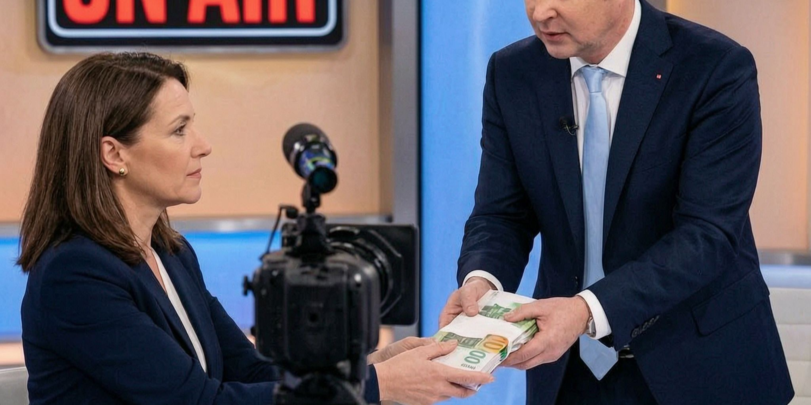

Qualität auf Staatskosten

Der Staat verteilt 55 Millionen Euro an die Medien. Gemeldet hat es der größte Staatsempfänger unter ihnen selbst.
ÖVP, SPÖ und NEOS haben sich auf ein Medienförderpaket geeinigt, vorgestellt von Medienminister Andreas Babler. Größter Posten ist eine Zustellförderung für abonnierte Tages- und Wochenzeitungen, 25 Millionen Euro pro Jahr ab 2027, dazu je 20 Millionen für die digitale Transformation und zehn Millionen für Medienkompetenz. Das Geld geht an die Presse.
Die Meldung darüber lief über den ORF, und der ist der eigentliche Fall. Die Zeitungen bekommen 55 Millionen aus dem Budget. Der ORF kassiert eine eigene Zwangsabgabe: 15,30 Euro im Monat, fällig für jeden Hauptwohnsitz, auch ohne Empfangsgerät, ob man einschaltet oder nicht. Kein anderes Medium des Landes hängt so vollständig am Staat.
Babler nennt als Ziel „unabhängigen Qualitätsjournalismus“. Unabhängig, und vom Staat bezahlt, im selben Satz. Wer die Förderkriterien schreibt, entscheidet, welche Redaktion sie erfüllt. Und der Sender, den jeder zahlen muss, meldet die Wohltat, als beträfe sie ihn nicht.
Unabhängig ist ein Journalismus, der die Hand nicht kennt, die ihn füttert.